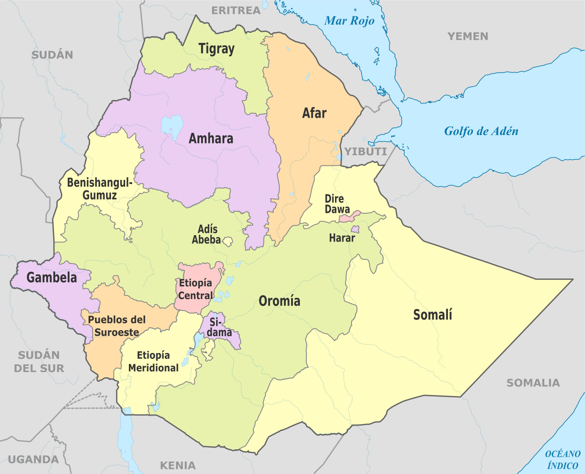
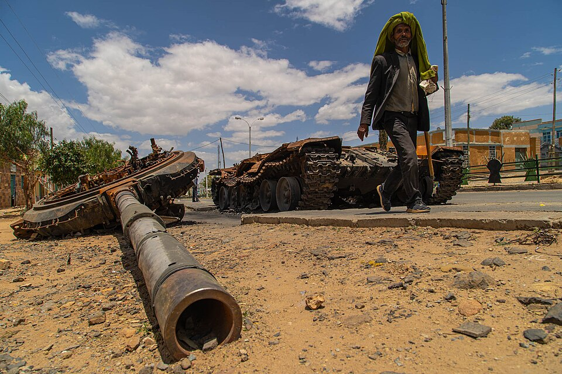

Un antiguo conflicto vuelve a arder en África. Siete grupos armados etíopes han firmado un acuerdo para derrocar al gobierno federal tan solo cuatro años después del acuerdo de paz. Tras ser un actor inestabilizador que sin embargo ha conseguido esquivar el conflicto, el primer ministro Abiy Ahmed Ali parece que no podrá evitar el enfrentamiento directo en el norte del país con el Frente de Liberación Popular de Tigray.
Un país sin paz
El estado moderno etíope nació en 1995, tras cuatro años de transición. Después de una guerra civil que duró casi dos décadas, la nueva constitución estableció un estado federal para acomodar a las diferentes etnias que forman el país. El Frente de Liberación Popular de Tigray (FLPT) salió como fuerza dominante tras este conflicto. A pesar de ser una fuerza nacionalista de la región de Tigray, su actuación durante la guerra les otorgó un importante estatus entre la población.
El FLPT lideró ininterrumpidamente más de dos décadas de apertura política y crecimiento económico. Desde 1995 hasta 2018, el país vió un crecimiento medio del 7,21% (frente a un crecimiento del 2,27% en España durante el mismo tiempo) y se transformó de un estado de partido único a un régimen híbrido (según la categorización de Índice de democracia del Economist). Sin embargo, protestas populares acabaron con el poder del partido hegemónico en 2018. Las constantes tensiones en la frontera con Eritrea (con quien Etiopía estuvo en guerra de 1998 a 2000), el aumento de la violencia étnica y un constante empeoramiento de las libertades políticas en la última década provocaron que los socios de coalición del FLPT pasaran a apoyar al candidato Abiy Ahmed Ali.
Abiy Ahmed fue recibido con entusiasmo por la comunidad internacional. Presentado como un reformista y demócrata, recibió el Premio Nobel de la Paz por su acuerdo de paz con Eritrea. Sin embargo, desde su toma del poder, se ha acelerado la erosión democrática en Etiopía y ha tenido graves crisis diplomáticas con Sudán, Egipto, Somalia y Eritrea, siempre con los rumores de una nueva guerra de fondo.

División de Etiopío en estados
Autor: Milenioscuro
El conflicto entre el primer ministro y el FLPT estalló en 2020. La cancelación de las elecciones previstas para ese año debido a la pandemia del COVID-19 fue el catalizador que enfrentó al gobierno federal con el estado de Tigray controlado por el FLPT. Sin embargo, el FLPT había perdido el apoyo en Etiopía del que una vez gozó y numerosos grupos militares junto al gobierno de Eritrea se alinearon con Abiy Ahmed mientras que la coalición que el FLPT había formado sufrió numerosos conflictos internos. La Guerra de Tigray terminó con un acuerdo de paz en 2022 tras entre cien mil y seiscientos mil muertos, más del 90% civiles. Esto fue un resultado terrible para el partido etíope: el ejército federal demostró tener mejor equipamiento militar, más aliados internos y externos; la milicia Fano ocupó el oeste de Tigray y el FLPT fue excluido del sistema político aun con la promesa de su reintegración en el acuerdo de paz.
¿Qué ha cambiado?
A pesar de que el conflicto finalizase, las tensiones nunca desaparecieron. Pequeñas escaramuzas siguieron ocurriendo en Tigray y las tensiones históricas, étnicas y políticas que llevaron a su estallido no se resolvieron porque solo el gobierno federal y el FLPT se sentaron a la mesa. Por ello ha resultado sorprendente el comunicado conjunto de los siete grupos armados, incluyendo al Fano que sigue ocupando parte de Tigray.
Incluso con las vitales diferencias que comparten los grupos, parece que han priorizado el derrocamiento de Abiy Ahmed a sus rencillas pasadas. La autocratización del país y la violencia étnica no resuelta ha permitido a esta nueva alianza encontrar un enemigo en común. El primer ministro revalidó su cargo en junio, pero 143 colegios electorales no pudieron abrir debido a la violencia de la zona y la región de Tigray fue excluida por completo. Esto ha provocado que los grupos de la alianza llamada Coalición de las Fuerzas Populares Etíopes para la Supervivencia hayan rechazado los resultados oficiales y esgriman la necesidad de una “guerra defensiva tras la intensificación de la invasión a través de varios métodos por parte del autocrático y genocida régimen”.

Un hombre camina frente a un tanque durante la Guerra de Tigray
Autor: Yan Boechat/VOA
¿Y ahora qué?
Aunque el ejército federal sigue estando mejor armado, especialmente gracias a los drones suministrados por Arabia Saudí, la situación no parece tan segura para Abiy Ahmed como lo fue en 2022. El primer ministro ha perdido la confianza que muchas fuerzas depositaron en él en 2018 para acabar con la violencia en el país y las amenazas de invadir Eritrea para obtener acceso al Mar Negro le ha enemistado con el que hasta ahora era su mayor aliado contra el FLPT.
La realidad es que nadie sabe qué pasará ahora. Existen tres escenarios: el ejército federal consigue detener la rebelión y se vuelve al status-quo de un conflicto de baja intensidad en zonas específicas; la alianza se ve consumida por sus diferencias internas como sucedió en 2022; o la revolución triunfa y consigue derrocar a Abiy Ahmed.
Sin embargo, como indica Mohamed Kheir Omer en su artículo en Al Jazeera, este último escenario podría provocar un aumento de la violencia. El investigador especializado en el Cuerno de África explica cómo desde 2018 ninguna de las causas que han provocado este conflicto han sido abordadas. Las tensiones que el estado etíope lleva arrastrando desde su fundación seguirán existiendo tras el conflicto y esta alianza, cuyo único objetivo en común es el fin del primer ministro, previsiblemente no conseguirá acordar soluciones. En ese caso, es muy posible un nuevo conflicto entre los que hoy son aliados.